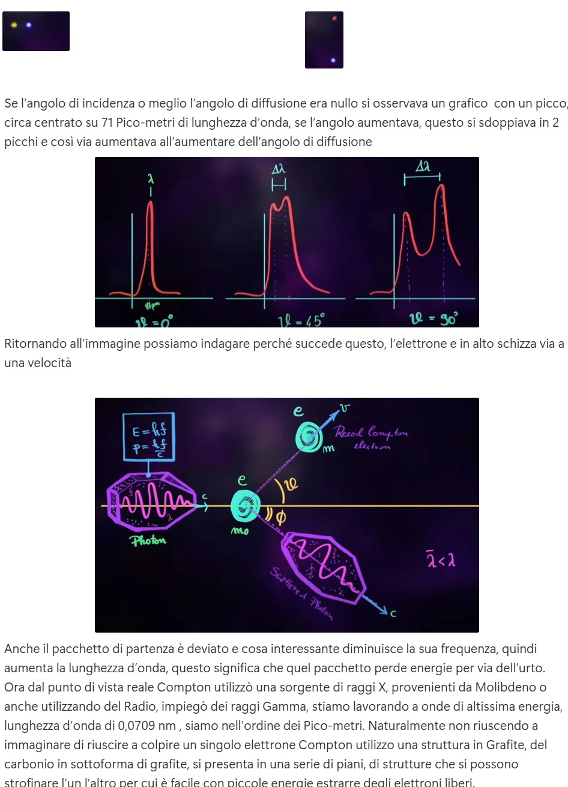
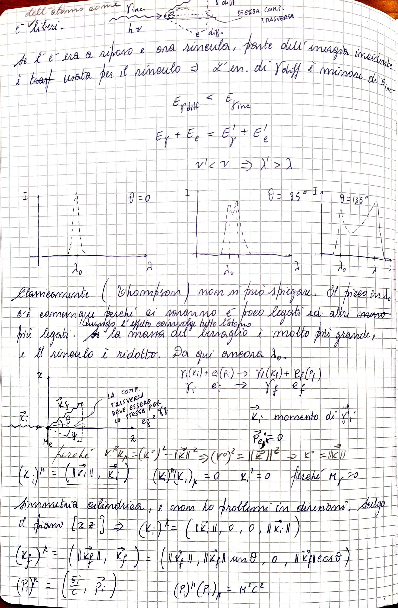

L’effetto Compton (scoperto da A.H. Compton nel 1923) è un fenomeno fondamentale che dimostra la natura corpuscolare della radiazione elettromagnetica. In questo effetto, un fotone ad alta energia (raggi X o gamma) urta un elettrone praticamente libero, provocando la diffusione del fotone con lunghezza d’onda aumentata rispetto a quella iniziale.
Questa variazione di lunghezza d’onda non è spiegabile tramite la sola teoria ondulatoria classica della luce, bensì richiede l’ipotesi che la luce sia composta da quanti (fotoni) con energia \( E = h f \) e quantità di moto \( p = \frac{h f}{c} \).
Compton utilizzò sorgenti di raggi X molto energetici (ad esempio dal Molibdeno) con lunghezze d’onda molto piccole (dell’ordine di picometri, \( 1 \, \text{pm} = 10^{-12} \, \text{m} \)). Bersagliando un reticolo di grafite, i fotoni potevano interagire con gli elettroni quasi liberi del carbonio. Il fotone incidente, dopo l’urto, emergeva deviato di un angolo \(\theta\) rispetto alla direzione iniziale, e misurando la lunghezza d’onda del fotone diffuso Compton notò l’aumento sistematico di \(\lambda'\) rispetto a \(\lambda\).
Alla lavagna, immaginiamo di disegnare:
La conservazione della quantità di moto lungo x e y impone le seguenti equazioni:
\[ \text{Lungo x: } \frac{h f}{c} = \frac{h f'}{c} \cos\theta + m_e v \cos\phi \] \[ \text{Lungo y: } 0 = \frac{h f'}{c} \sin\theta - m_e v \sin\phi \]Da queste due equazioni possiamo, con opportune manipolazioni, eliminare \(\phi\) e trovare una relazione che leghi \(f\) e \(f'\) all’angolo \(\theta\). L’idea è trattare il problema come un urto elastico tra due particelle, fotone ed elettrone, e richiedere inoltre la conservazione dell’energia.
Combinando la conservazione dell’energia e quella della quantità di moto, si ottiene la celebre formula di Compton per la variazione di lunghezza d’onda:
\[ \lambda' - \lambda = \frac{h}{m_e c}(1 - \cos \theta). \]Dove \(\lambda = \frac{c}{f}\) e \(\lambda' = \frac{c}{f'}\). Notate che \(\Delta \lambda = \lambda' - \lambda\) dipende solo da \(\theta\) e dalla costante \( \frac{h}{m_e c} \), detta lunghezza d’onda Compton dell’elettrone (\(\approx 2.43 \times 10^{-12}\) m), e non dalla lunghezza d’onda iniziale \(\lambda\). Questo è un aspetto chiave che conferma il comportamento corpuscolare del fotone.
L’effetto Compton conferma che la radiazione elettromagnetica non può essere spiegata solo come onda classica. Il fotone si comporta come una particella con energia ed impulso ben definiti, in grado di trasferire quantità di moto a un elettrone. L’accordo tra teoria e sperimentazione su questo fenomeno fu uno degli elementi decisivi per l’accettazione della natura quantistica della luce.
Dovendo mostrare questa derivazione alla lavagna, faresti così:
In assenza di immagini reali, puoi immaginare questo scenario: sulla lavagna tracci un asse orizzontale, un vettore verso destra per il fotone incidente, poi dopo l’urto disegni un triangolo con un angolo \(\theta\) per il fotone diffuso e un vettore in altra direzione per l’elettrone, mostrando come le componenti di questi vettori “chiudono” il bilancio della quantità di moto.
Per giungere alla formula di Compton, occorre mettere insieme le due grandi leggi di conservazione: quella dell’energia e quella della quantità di moto, applicate a un urto tra due particelle: il fotone incidente (che prima dell’urto viaggia in una sola direzione) e l’elettrone praticamente fermo (almeno rispetto all’energia del fotone).
1. Definizione delle grandezze iniziali: Prima dell’urto, il fotone ha energia \( E = h f \) e quantità di moto \( p = \frac{h f}{c} \). L’elettrone è considerato inizialmente fermo, quindi energia cinetica \(\approx 0\) e quantità di moto nulla. L’energia totale iniziale è dunque \(E_i = h f + m_e c^2\) (contando anche l’energia a riposo dell’elettrone). La quantità di moto totale iniziale è tutta del fotone lungo l’asse x: \(p_x = \frac{h f}{c}, p_y=0.\)
2. Grandezze finali dopo l’urto: Dopo l’urto, il fotone ha energia ridotta \(E' = h f'\), e quindi quantità di moto \(\frac{h f'}{c}\) nella nuova direzione. L’elettrone si muove con una certa velocità \(v\) e avrà energia cinetica aggiuntiva, oltre alla sua energia a riposo \(m_e c^2\). La conservazione dell’energia implica: \[ h f + m_e c^2 = h f' + \sqrt{(m_e c^2)^2 + (m_e v c)^2} \approx h f' + m_e c^2 + \frac{1}{2}m_e v^2 \quad \text{(per energia cinetica dell’elettrone)}. \] Tuttavia, è più corretto usare la relazione relativistica completa: \[ h f + m_e c^2 = h f' + \sqrt{(m_e c^2)^2 + (p_e c)^2}. \] Qui \(p_e\) è la quantità di moto dell’elettrone dopo l’urto.
3. Conservazione della quantità di moto in due dimensioni: Come già mostrato, lungo l’asse x: \[ \frac{h f}{c} = \frac{h f'}{c}\cos\theta + p_{e,x}, \] e lungo l’asse y: \[ 0 = \frac{h f'}{c}\sin\theta - p_{e,y}. \] Da qui si ricavano le componenti del momento dell’elettrone in termini di \(f\), \(f'\), e \(\theta\).
4. Eliminazione dell’angolo \(\phi\) dell’elettrone e passaggio dalla frequenza alle lunghezze d’onda: L’obiettivo è ottenere una relazione tra \(\lambda\) e \(\lambda'\). Sappiamo che \(\lambda = \frac{c}{f}\) e \(\lambda' = \frac{c}{f'}\). Il passaggio chiave è combinare le due leggi di conservazione per isolare \(\lambda' - \lambda\). Dalla conservazione dell’energia relativistica e della quantità di moto, si arriva a un’espressione che, dopo algebra non banale, porta al risultato semplice e elegante: \[ \lambda' - \lambda = \frac{h}{m_e c}(1 - \cos\theta). \] Questo risultato mostra che la variazione \(\Delta \lambda\) è indipendente dall’energia iniziale del fotone, dipende solo dall’angolo di scattering \(\theta\) e dalle costanti fondamentali \(\frac{h}{m_e c}\). Questa quantità \(\frac{h}{m_e c}\) è la lunghezza d’onda Compton dell’elettrone.
5. Interpretazione della formula: L’aumento di lunghezza d’onda \(\Delta \lambda\) è dovuto al trasferimento di energia (e quantità di moto) dal fotone all’elettrone. Maggiore è \(\theta\) (fotone diffuso “indietro”), più grande è la variazione di lunghezza d’onda. Il fotone esce con energia minore (quindi frequenza minore, lunghezza d’onda maggiore) rispetto a prima, e l’elettrone acquisisce l’energia mancante. Questo scambio conferma la natura particellare della luce: solo trattando il fotone come un quanto d’energia e di quantità di moto si ottiene un accordo perfetto con i dati sperimentali.
Così, i passaggi matematici, per quanto omessi qui nei dettagli integrali, prevedono di:
Appunti:
1ª fase (C.N.)
All'inizio del '900, una delle prime evidenze sperimentali a essere approfonditamente studiate fu la radiazione di corpo nero. Questa portò Planck a sviluppare una formulazione teorica in cui gli atomi sulle pareti della cavità (il cubo con il foro del modello C.N.) venivano modellizzati come oscillatori, capaci di assorbire o emettere energia sotto forma di pacchetti discreti (quanti), la cui energia è proporzionale alla frequenza della radiazione: \( E_0 = h \nu \)
2ª fase (E.F.)
Quanto visto prima ci introduce a una costante fondamentale. Noi ne avevamo già incontrata un'altra: la velocità della luce, dalla trattazione della Relatività Ristretta. Negli stessi anni, Einstein si preoccupa di un altro fenomeno: l'effetto fotoelettrico. Questo rappresenta un passo ulteriore. Planck non era intervenuto sulla natura della radiazione all'interno della cavità, ma solo sui meccanismi di assorbimento ed emissione. Einstein invece afferma che è la stessa radiazione a propagarsi in pacchetti discreti, estendendo l'idea quantistica alla luce stessa. Si tratta, sostanzialmente, della stessa relazione: \( E = h \nu \)
3ª fase (E.C.)
Verso il 1923, Compton formula una nuova ipotesi e indaga la diffusione della radiazione su vari materiali, concentrandosi sulla grafite. La radiazione impiegata è a frequenza elevatissima (raggi X): soltanto grazie ai recenti progressi strumentali era ormai possibile misurarne con precisione frequenza e lunghezza d’onda. Questo chiarisce perché fenomeni analoghi non fossero stati osservati in precedenza. Ma perché scegliere frequenze così alte? Perché, come evidenziato da Einstein e Planck, un’onda di frequenza maggiore corrisponde a un fotone di energia più grande. Quando tali fotoni interagiscono con gli elettroni legati in un cristallo, l’energia coinvolta è sufficiente a trattare quegli elettroni quasi liberi: se li considerassimo ancora fortemente vincolati al reticolo, non riusciremmo a conciliare le leggi di conservazione di energia e quantità di moto con i dati sperimentali, né a spiegare lo grande spostamento in lunghezza d’onda osservato nello scattering di Compton.
4ª fase (Dubbi sulla trattazione classica - Thomson)
A questo punto, è utile confrontare il risultato di Compton con la trattazione classica del fenomeno, nota come diffusione Thomson. In quel modello pre-quantistico, un'onda elettromagnetica incide su un atomo e mette in oscillazione un elettrone legato, che a sua volta riemette radiazione alla stessa frequenza dell’onda incidente. La luce diffusa, quindi, dovrebbe avere la stessa lunghezza d’onda e frequenza della radiazione inviata sul cristallo, indipendentemente dall’angolo con cui viene osservata.
Tuttavia, gli esperimenti di Compton mostrarono qualcosa di diverso: oltre al picco atteso alla stessa lunghezza d’onda dell’onda incidente, si osservava un secondo picco spostato verso lunghezze d’onda maggiori, il cui valore variava al variare dell’angolo di scattering. Questo spostamento dipendente dall’angolo non era prevedibile dalla teoria classica. Il modello di Thomson non era più sufficiente: la luce non poteva più essere descritta come una semplice onda continua. Serviva una nuova interpretazione, che includeva la natura corpuscolare della luce e il trasferimento di energia e q.d.m. quantizzate tra fotoni ed elettroni. Quindi sempre studiata come ondulatorio ma si inizia a vedere che la radiazione ha anche aspetto corpuscolare dualismo onda-particella.
5ª fase (Come si calcola esplicitamente lo spostamento Compton?)
Lo spostamento Compton si calcola applicando le leggi di conservazione dell’energia e della quantità di moto a un urto tra un fotone e un elettrone libero inizialmente fermo. Il fotone, dopo l’urto, viene diffuso con un angolo \(\theta\) rispetto alla direzione iniziale, e la sua lunghezza d’onda risulta aumentata.
La relazione che descrive questo fenomeno è la celebre formula di Compton:
\[ \Delta \lambda = \lambda' - \lambda = \frac{h}{m_e c}(1 - \cos \theta) \]
Dove:
6ª fase (Derivazione quantitativa dello spostamento Compton con la cinematica relativistica)
Per ottenere quantitativamente lo scostamento Compton, partiamo dall’ipotesi che il fenomeno possa essere descritto come un urto tra due corpi: un fotone (considerato come un pacchetto di energia) e un elettrone libero. Invece di trattare la diffusione come propagazione ondosa classica, seguiamo l’interpretazione suggerita da quanto visto nella radiazione di corpo nero e nell’effetto fotoelettrico: la radiazione è costituita da quanti di energia, ovvero fotoni, che interagiscono con particelle materiali.
In questa visione, l’interazione tra la radiazione incidente e il cristallo è descritta come un processo di urto tra un fotone e un elettrone. Il fotone incidente colpisce l’elettrone, trasferendogli parte della propria energia e quantità di moto. Dopo l’urto:
Questo salto concettuale - dal modello ondulatorio al modello corpuscolare - è tutt’altro che banale, ma è necessario per spiegare le osservazioni sperimentali. Se il processo è un urto elastico tra due particelle, ci aspettiamo che:


(Thomson*)Ora sappiamo che, nell’urto tra fotone ed elettrone, pur mantenendosi la conservazione dell’energia totale e della quantità di moto totale, le energie si redistribuiscono diversamente tra i due corpi coinvolti. È naturale quindi aspettarsi che la radiazione diffusa - ovvero il fotone dopo l’urto - possa avere un’energia diversa rispetto allo stato iniziale.
Poiché l’energia di un fotone è legata alla sua frequenza \( \nu \) (e quindi anche alla sua lunghezza d’onda), ci aspettiamo che nella distribuzione degli eventi osservati sperimentalmente compaiano picchi a lunghezza d’onda diversa da quella incidente.
Per descrivere quantitativamente questo fenomeno, possiamo procedere in due modi. Dato che il processo coinvolge due corpi in stato iniziale (fotone ed elettrone) e due in quello finale, ci serve almeno una relazione tra energia e quantità di moto come abbiamo visto nella Relatività Ristretta.
Ricordiamo che una particella a massa nulla, come il fotone, viaggia sempre alla velocità della luce \( c \), e la sua energia è legata al momento tramite la relazione relativistica. Applicando questo concetto al fotone come corpuscolo, possiamo quindi usare le leggi di conservazione del trimomento e dell’energia per descrivere il processo d’urto.
In altre parole, trattiamo l’interazione come un classico urto tra particelle: fotone iniziale e finale, elettrone iniziale e finale. Scrivendo le equazioni che regolano il trimomento e l’energia totale, tenendo conto che \( E = h\nu \), possiamo combinarle algebricamente fino a ottenere la relazione che descrive lo spostamento in lunghezza d’onda.
Ma c’è un modo ancora più potente per arrivare al risultato: sfruttare il formalismo covariante della Relatività Ristretta, cioè l’uso dei quadrivettori. Questo approccio, più compatto ed elegante, ci permette di derivare la formula dello spostamento Compton con meno passaggi e maggiore generalità.
In conclusione, per derivare quantitativamente lo spostamento Compton possiamo seguire due approcci:
7ª fase (Formalismo covariante: impostazione del problema)
Studiamo ora quantitativamente l’effetto Compton utilizzando il formalismo covariante della Relatività Ristretta. Immaginiamo di rappresentare l’interazione nel seguente modo: utilizzeremo la lettera \( \gamma \) per indicare il fotone, associandogli il suo quadrivettore momento, scritto tra parentesi.
È importante sottolineare che stiamo compiendo un passaggio concettuale non banale: consideriamo la radiazione come un insieme di particelle (i fotoni), ciascuna delle quali trasporta una certa energia e quantità di moto, pur avendo massa nulla e viaggiando alla velocità della luce.
Nello stato iniziale, abbiamo un fotone entrante con quadrivettore: \[ \gamma (\vec{K}_i) \] e un elettrone inizialmente fermo (o quasi), rappresentato da: \[ e^- (\vec{P}_i) \]
Dopo l’urto, nello stato finale, il fotone viene diffuso con un nuovo quadrivettore: \[ \gamma (\vec{K}_f) \] mentre l’elettrone rincula e assume un nuovo quadrivettore: \[ e^- (\vec{P}_f) \]
Scriviamo simbolicamente il processo in termini di quadrivettori: \[ \gamma(\vec{K}_i) + e^-(\vec{P}_i) \longrightarrow \gamma(\vec{K}_f) + e^-(\vec{P}_f) \] Questo è un classico processo a due corpi, che tratteremo applicando la conservazione del quadrimpulso: \[ \vec{K}_i + \vec{P}_i = \vec{K}_f + \vec{P}_f \]
Esplicitiamo ora i quadrivettori coinvolti nel processo. Ricordiamo che un quadrivettore momento ha la forma generale: \[ P = \left( \frac{E}{c}, \vec{p} \right) \] dove \( E \) è l’energia della particella e \( \vec{p} \) è il vettore quantità di moto tridimensionale.
Per ciascuna particella coinvolta nel processo Compton, abbiamo:
Ogni quadrivettore energia-impulso ha la forma:
\( \vec{P} = \left( \frac{E}{c}, p_x, p_y, p_z \right) \)
Per un fotone:
Se il fotone viaggia lungo l’asse x, allora: \[ \vec{p} = \left( \frac{h \nu}{c}, 0, 0 \right) \] e quindi il quadrivettore completo è: \[ \vec{K}_i = \left( \frac{h \nu}{c}, \frac{h \nu}{c}, 0, 0 \right) \]
Questo è coerente con la relazione \( E = pc \) per una particella a massa nulla, e riflette il fatto che tutta la quantità di moto è nella direzione x.
“Perché l’Hamiltoniana deve essere hermitiana?”
Nel contesto dell’effetto Compton abbiamo visto che la conservazione dell’energia è centrale nel trattare la dinamica di particelle. In meccanica quantistica, l’equivalente della conservazione dell’energia è assicurato da un’Hamiltoniana hermitiana, che garantisce l’evoluzione unitaria del sistema.
In particolare, il fatto che l’Hamiltoniana sia hermitiana implica che i suoi autovalori - che rappresentano le possibili energie misurabili - siano reali. Ma soprattutto, assicura che la probabilità totale (cioè l’integrale della densità di probabilità sull’intero spazio) rimanga costante nel tempo: si conserva sia globalmente che localmente.
Questo è analogo a quanto abbiamo visto nel caso del Compton: anche lì, l’energia e la quantità di moto devono essere conservate globalmente nel sistema fotone-elettrone, e il bilancio va fatto su tutto il processo.
Ragionando in termini di vettore di stato, la conservazione della probabilità si traduce nel fatto che la norma del ket \( |\psi(t)\rangle \) rimane costante nel tempo. Questo richiede che l’operatore di evoluzione temporale \( U(t, t_0) \) sia unitario, e ciò avviene se l’Hamiltoniana è hermitiana.
Ma possiamo interpretare la stessa conservazione anche in termini ondulatori: se pensiamo \( \psi(x,t) \) come un’onda complessa che evolve nel tempo, allora la quantità fisicamente misurabile -- cioè la densità di probabilità \( |\psi(x,t)|^2 \) -- deve rimanere normalizzata a 1:
\[ \int |\psi(x,t)|^2 \, dx = 1 \quad \forall t \]
Questo porta naturalmente al concetto di equazione di continuità: \[ \frac{\partial \rho}{\partial t} + \nabla \cdot \vec{j} = 0 \] dove \( \rho = |\psi|^2 \) è la densità di probabilità e \( \vec{j} \) è la corrente di probabilità. Anche in questa forma, la conservazione locale e globale della probabilità deriva direttamente dal fatto che l’Hamiltoniana è hermitiana.
Questo doppio punto di vista [ vettoriale e ondulatorio ] riflette esattamente la dualità che stiamo imparando a gestire anche nel caso dell’effetto Compton: trattare la radiazione come un corpuscolo quantizzato, ma senza abbandonare del tutto l’intuizione ondulatoria.
...e distinguiamo conservazione locale e conservazione globale nel seguente modo:
Entrambe le forme di conservazione sono garantite dalla struttura matematica della teoria: in particolare, dall’ermiticità dell’Hamiltoniana e dall’unitarietà dell’evoluzione. Sono due facce della stessa medaglia, proprio come onda e particella.
In meccanica quantistica, un’Hamiltoniana hermitiana è necessaria affinché l’operatore di evoluzione temporale sia unitario. L’unitarietà implica, e anzi è equivalente a, la conservazione della probabilità: \[ \langle \psi(t) | \psi(t) \rangle = \langle \psi(t_0) | \psi(t_0) \rangle \]
Ragionando in termini di vettore di stato, la norma deve rimanere 1. Ragionando in termini ondulatori, la densità \( |\psi(x,t)|^2 \) deve restare normalizzata: \[ \int |\psi(x,t)|^2 dx = 1 \quad \forall t \]
Questo è garantito se e solo se l’Hamiltoniana è hermitiana. A livello locale, ciò corrisponde all’equazione di continuità: \[ \frac{\partial \rho}{\partial t} + \nabla \cdot \vec{j} = 0 \] che esprime il fatto che la probabilità non si crea né si distrugge, ma fluisce. Anche nel caso Compton, si conserva energia e quantità di moto globalmente: stessa logica, stessa struttura.
Step 1 - Evoluzione dello stato:
L’equazione di Schrödinger è:
\( i \hbar \frac{d}{dt}|\psi(t)\rangle = \hat{H} |\psi(t)\rangle \)
con soluzione: \( |\psi(t)\rangle = U(t, t_0) |\psi(t_0)\rangle \)
Step 2 - Conservazione globale della norma:
\[
\langle \psi(t) | \psi(t) \rangle = \langle \psi(t_0) | U^\dagger U | \psi(t_0) \rangle = \langle \psi(t_0) | \psi(t_0) \rangle
\]
⇒ \( U^\dagger = U^{-1} \) ⇒ \( U \) è unitario.
Step 3 - Unitarietà ⇔ Hamiltoniana hermitiana:
\[
\hat{H}^\dagger = \hat{H} \quad \Longleftrightarrow \quad U(t,t_0) \text{ unitario} \quad \Longleftrightarrow \quad \text{Probabilità globale conservata}
\]
Step 4 - Vista ondulatoria:
\[
\int |\psi(x,t)|^2 dx = 1 \quad \forall t
\]
⇒ interpretazione come conservazione della probabilità totale.
Step 5 - Conservazione locale:
\[
\frac{\partial \rho}{\partial t} + \nabla \cdot \vec{j} = 0
\]
con \( \rho = |\psi|^2 \) e \( \vec{j} = \frac{\hbar}{2im} (\psi^* \nabla \psi - \psi \nabla \psi^*) \)
Step 6 - Conclusione:
| Tipo di conservazione | Significato | Condizione sufficiente |
|---|---|---|
| Globale | Norma costante | \( \hat{H} \) hermitiana ⇔ \( U \) unitario |
| Locale | Flusso continuo di probabilità | Equazione di continuità + \( \hat{H} \) hermitiana |
👉 Due prospettive diverse ma coerenti, che si completano come onda e particella.
Consideriamo l’equazione di Schrödinger dipendente dal tempo per una particella libera: \[ i\hbar \frac{\partial \psi}{\partial t} = -\frac{\hbar^2}{2m} \nabla^2 \psi \] e il suo complesso coniugato: \[ -i\hbar \frac{\partial \psi^*}{\partial t} = -\frac{\hbar^2}{2m} \nabla^2 \psi^* \]
Moltiplichiamo la prima per \( \psi^* \), la seconda per \( \psi \), e li combiniamo: \[ \psi^* \frac{\partial \psi}{\partial t} + \psi \frac{\partial \psi^*}{\partial t} = \frac{\hbar}{2im} \left( \psi^* \nabla^2 \psi - \psi \nabla^2 \psi^* \right) \]
Il membro sinistro è la derivata temporale della densità di probabilità: \[ \frac{\partial}{\partial t} |\psi|^2 = \frac{\partial \rho}{\partial t} \] mentre il membro destro può essere riscritto come divergente di una corrente: \[ \nabla \cdot \vec{j} = \frac{\hbar}{2im} \left( \psi^* \nabla \psi - \psi \nabla \psi^* \right) \]
Quindi otteniamo l’equazione di continuità: \[ \boxed{ \frac{\partial \rho}{\partial t} + \nabla \cdot \vec{j} = 0 } \] che esprime la conservazione locale della probabilità. Non implica la globale, ma se integriamo su tutto lo spazio (e la corrente decade all’infinito), otteniamo: \[ \frac{d}{dt} \int |\psi(x,t)|^2 \, dx = 0 \]
Questo non implica automaticamente la conservazione globale. Tuttavia, se: \[ \lim_{|x| \to \infty} j(x, t) = 0 \] allora, integrando su \( \mathbb{R} \), otteniamo: \[ \frac{d}{dt} \int_{-\infty}^{+\infty} |\psi(x,t)|^2 \, dx = 0 \] ovvero la probabilità totale è conservata.
Per evitare confusione, distinguiamo due affermazioni matematiche ben diverse:
In breve: la normalizzazione dice “quanto vale la probabilità”, la conservazione dice “che quella quantità resta costante nel tempo”. Sono concetti connessi, ma logicamente distinti.
8ª fase (Formalismo covariante: definizione dei quadrivettori)
Procediamo con la scrittura covariante del processo: \[ \underbrace{\gamma(k_i)}_{\text{fotone iniziale}} + \underbrace{e(P_i)}_{\text{elettrone iniziale}} \longrightarrow \underbrace{\gamma(k_f)}_{\text{fotone diffuso}} + \underbrace{e(P_f)}_{\text{elettrone finale}} \]
Finora abbiamo rappresentato le particelle tramite i loro trimomenti \( \vec{k}, \vec{p} \), ma - come stabilito nel formalismo della Relatività Ristretta - è più naturale associare a ciascuna anche l’energia, e trattarle come quadrivettori momento.
Per questo motivo da ora:
Per un fotone in generale vale: \[ \gamma(k) \Rightarrow k^\mu = \left( \frac{E}{c}, \vec{k} \right) = \left( |\vec{k}|, \vec{k} \right) \] perché l’energia è \( E = |\vec{k}| c \), e dunque: \[ k^\mu k_\mu = \left( \frac{E}{c} \right)^2 - |\vec{k}|^2 = 0 \quad \Rightarrow \quad k^2 = 0 \] cioè il quadrato lorentziano del quadrimpulso di un fotone è nullo: ciò riflette il fatto che la massa del fotone è nulla ("condizione on-shell").
Per l’elettrone invece, valgono: \[ p_i^\mu = \left( \frac{E_i}{c}, \vec{p}_i \right), \quad p_f^\mu = \left( \frac{E_f}{c}, \vec{p}_f \right) \] con: \[ p_i^2 = p_f^2 = m_e^2 c^2 \] cioè il quadrato lorentziano del quadrimpulso di una particella massiva è pari a \( m^2 c^2 \).
Riassumendo:
Ora possiamo scegliere un sistema di riferimento comodo: supponiamo che il fotone incidente propaghi lungo l’asse z, e l’elettrone iniziale sia fermo. Questo equivale a lavorare nel sistema del laboratorio ("Lab Frame").
Lo schema geometrico è il seguente:
9ª fase (Derivazione covariante della formula di Compton)
Ripartiamo dalla conservazione del quadrimpulso: \[ k_i^\mu + p_i^\mu = k_f^\mu + p_f^\mu \] Elevando al quadrato entrambi i membri (cioè calcolando il quadrato lorentziano): \[ (k_i + p_i)^2 = (k_f + p_f)^2 \]
Espandiamo: \[ k_i^2 + p_i^2 + 2 k_i \cdot p_i = k_f^2 + p_f^2 + 2 k_f \cdot p_f \] dove:
In un sistema in cui l’elettrone è inizialmente fermo: \[ p_i^\mu = (m_e c, \vec{0}) \quad \Rightarrow \quad k_i \cdot p_i = \frac{h\nu}{c} \cdot m_e c = h\nu m_e \]
Calcoliamo ora \( k_f \cdot p_f \). In alternativa a calcoli più complessi, consideriamo la conservazione dell’energia: \[ h\nu + m_e c^2 = h\nu' + E_f \quad \Rightarrow \quad E_f = h\nu + m_e c^2 - h\nu' \]
Possiamo quindi sostituire nelle espressioni covarianti o, più elegantemente, ricorrere al passaggio finale: \[ \lambda = \frac{c}{\nu}, \quad \lambda' = \frac{c}{\nu'} \] e con le manipolazioni viste (prodotti scalari, energia-momento), si arriva alla: \[ \boxed{ \lambda' - \lambda = \frac{h}{m_e c}(1 - \cos\theta) } \]
Questa è la formula di Compton, ottenuta rigorosamente dal formalismo relativistico. Descrive la variazione in lunghezza d’onda in funzione dell’angolo di diffusione del fotone e dipende solo da costanti fondamentali: \( h \) (costante di Planck), \( m_e \) (massa dell’elettrone), e \( c \) (velocità della luce).
Procediamo esplicitamente con le manipolazioni. Scriviamo la conservazione della quantità di moto e dell’energia: \[ \vec{p}_f = \vec{k}_i - \vec{k}_f \qquad\text{e}\qquad E_f = h\nu + m_e c^2 - h\nu' \]
Applichiamo ora la relazione relativistica: \[ E_f^2 = p_f^2 c^2 + m_e^2 c^4 \] Sostituiamo \( \vec{p}_f = \vec{k}_i - \vec{k}_f \) e \( E_f \) espresso sopra:
Lato sinistro: \[ E_f^2 = (h\nu + m_e c^2 - h\nu')^2 \]
Lato destro: \[ |\vec{k}_i - \vec{k}_f|^2 = |\vec{k}_i|^2 + |\vec{k}_f|^2 - 2|\vec{k}_i||\vec{k}_f| \cos\theta \] quindi: \[ p_f^2 c^2 = \left(\frac{h \nu}{c}\right)^2 + \left(\frac{h \nu'}{c}\right)^2 - 2 \frac{h^2 \nu \nu'}{c^2} \cos\theta \] e infine: \[ E_f^2 = \left[ \frac{h^2 \nu^2 + h^2 \nu'^2 - 2 h^2 \nu \nu' \cos\theta}{c^2} \right] + m_e^2 c^4 \]
Uguagliando i due membri otteniamo una lunga espressione, ma si può semplificare dividendo tutto per \( c^2 \), e alla fine - dopo raccoglimenti e isolando \( \lambda' \) - si ottiene: \[ \underbrace{\left(\cancel{h\nu} + m_e c^2 - h\nu'\right)^2}_{\text{energia dell'elettrone}} = \underbrace{\cancel{(h\nu)^2} + \cancel{(h\nu')^2} - 2 h^2 \nu \nu' \cos\theta}_{\text{momento quadrato}} + \underline{m_e^2 c^4} \Rightarrow \boxed{\lambda' - \lambda = \underline{\frac{h}{m_e c}} (1 - \cos\theta)} \] \[ \boxed{ \lambda' - \lambda = \frac{h}{m_e c}(1 - \cos\theta) } \]
Scopriamo dunque che la lunghezza d’onda del fotone nello stato finale è diversa da quella iniziale: \[ \lambda' - \lambda = \frac{h}{m_e c}(1 - \cos\theta) \] Questa quantità, detta spostamento Compton, dipende unicamente dall’angolo di diffusione \(\theta\) e dalla massa della particella bersaglio.
La costante \( \frac{h}{m_e c} \) viene chiamata lunghezza d’onda Compton dell’elettrone, ed è una misura dell’effetto massimo che un fotone può subire diffondendo su un elettrone libero.
Quando \(\theta = 0\) (diffusione in avanti), abbiamo: \[ \lambda' - \lambda = \frac{h}{m_e c}(1 - \cos 0) = 0 \] Quindi non c’è variazione: la radiazione diffusa mantiene la stessa lunghezza d’onda del fotone incidente.
Ma se \(\theta = \pi\) (retrodiffusione), otteniamo lo spostamento massimo: \[ \lambda' - \lambda = \frac{2h}{m_e c} \] In questo caso, il fotone rimbalza all’indietro e la sua lunghezza d’onda aumenta al massimo. Questo ci consente di calcolare e verificare sperimentalmente il valore di \( \frac{h}{m_e c} \) con grande precisione.
Questo effetto fu osservato proprio in esperimenti con raggi X diffusi su reticoli cristallini: la struttura periodica del reticolo permetteva di risolvere le lunghezze d’onda grazie a fenomeni di diffrazione, analogamente a quanto visto in ottica.
Come appreso in meccanica ondulatoria, per rivelare la natura ondulatoria della radiazione occorrono ostacoli o fenditure con dimensioni comparate alla lunghezza d’onda. Solo così le differenze tra \( \lambda \) e \( \lambda' \) diventano sperimentabili, permettendo a Compton di misurare con precisione le variazioni indotte dall’urto.
In maniera analitica, la formula: \[ \Delta\lambda = \lambda' - \lambda = \frac{h}{m_e c}(1 - \cos\theta) \] ci offre una valenza diagnostica: non solo ci dice quanto cambia la lunghezza d’onda, ma ci mostra chiaramente che il processo richiede una trattazione relativistica.
Infatti, nessuna analisi basata sulla sola conservazione dell’energia classica o sul comportamento ondulatorio tradizionale avrebbe potuto prevedere uno spostamento che:
Proprio per questo, il formalismo covariante diventa lo strumento naturale per descrivere il processo: energia e quantità di moto sono unite in un unico quadrivettore, e la loro conservazione avviene in modo simultaneo e coerente in tutti i sistemi di riferimento.
Volendo, si può derivare lo stesso risultato usando:
10ª fase - Derivazione covariante della formula di Compton
Procediamo con la derivazione quantitativa completa della formula di Compton, usando il formalismo covariante della Relatività Ristretta.
🔹 Step 1 - Impostazione del processo
Consideriamo l’urto: \[ \gamma(k_i) + e(p_i) \longrightarrow \gamma(k_f) + e(p_f) \] dove tutte le variabili sono quadrivettori. Lavoriamo nel sistema del laboratorio (Lab Frame), in cui l’elettrone è inizialmente fermo.
🔹 Step 2 - Conservazione del quadrimpulso
Impostiamo la conservazione covariante: \[ k_i^\mu + p_i^\mu = k_f^\mu + p_f^\mu \] Eleviamo al quadrato entrambi i membri (prodotto scalare lorentziano): \[ (k_i + p_i)^2 = (k_f + p_f)^2 \]
🔹 Step 3 - Espansione del quadrato
\[ k_i^2 + p_i^2 + 2 k_i \cdot p_i = k_f^2 + p_f^2 + 2 k_f \cdot p_f \] Sostituendo:
🔹 Step 4 - Calcolo di \( k_i \cdot p_i \)
L’elettrone è inizialmente fermo: \[ p_i^\mu = (m_e c, \vec{0}) \] Allora: \[ k_i \cdot p_i = \frac{h \nu}{c} \cdot m_e c = h \nu m_e \]
🔹 Step 5 - Calcolo di \( k_f \cdot p_f \)
\[ k_f \cdot p_f = \frac{h \nu'}{c} \cdot \frac{E_f}{c} - \vec{k}_f \cdot \vec{p}_f \] Dalla conservazione dell’energia: \[ h\nu + m_e c^2 = h\nu' + E_f \Rightarrow E_f = h\nu + m_e c^2 - h\nu' \]
🔹 Step 6 - Relazione relativistica
Applichiamo: \[ E_f^2 = p_f^2 c^2 + m_e^2 c^4 \] dove: \[ \vec{p}_f = \vec{k}_i - \vec{k}_f \] Quindi: \[ |\vec{p}_f|^2 = |\vec{k}_i|^2 + |\vec{k}_f|^2 - 2 |\vec{k}_i||\vec{k}_f| \cos\theta \] Sostituendo: \[ p_f^2 c^2 = \left(\frac{h \nu}{c}\right)^2 + \left(\frac{h \nu'}{c}\right)^2 - 2 \frac{h^2 \nu \nu'}{c^2} \cos\theta \]
🔹 Step 7 - Uguaglianza dei due lati
Uguagliamo i due membri dell’equazione relativistica:
Lato sinistro (energia finale dell’elettrone):
\[
E_f^2 = \left( h \nu + m_e c^2 - h \nu' \right)^2
= \left( m_e c^2 + h(\nu - \nu') \right)^2
\]
Lato destro (impulso + massa):
Usiamo:
\[
p_f^2 = |\vec{p}_f|^2 = |\vec{k}_i - \vec{k}_f|^2
\Rightarrow
|\vec{k}_i|^2 + |\vec{k}_f|^2 - 2 |\vec{k}_i||\vec{k}_f| \cos\theta
\]
Ricordando che per un fotone \( |\vec{k}| = \frac{h\nu}{c} = \frac{h}{\lambda} \), otteniamo:
\[
p_f^2 c^2 = \left( \frac{h\nu}{c} \right)^2 + \left( \frac{h\nu'}{c} \right)^2 - 2 \frac{h^2 \nu \nu'}{c^2} \cos\theta
\]
quindi:
\[
E_f^2 = \cancel{m_e^2 c^4} + \frac{h^2 \nu^2 + h^2 \nu'^2 - 2 h^2 \nu \nu' \cos\theta}{c^2} + \underline{m_e^2 c^4}
\]
Raccogliamo \( \frac{h}{c} \) e riscriviamo le frequenze in termini di lunghezze d’onda:
\( \nu = \frac{c}{\lambda} \), \( \nu' = \frac{c}{\lambda'} \) ⇒
\( h\nu = \frac{h c}{\lambda} \), \( h\nu' = \frac{h c}{\lambda'} \)
Dopo semplificazioni e raccolte finali: \[ \boxed{ \lambda' - \lambda = \frac{h}{m_e c} (1 - \cos\theta) } \]
Il termine \( \frac{h}{m_e c} \) ha le dimensioni di una lunghezza e rappresenta la lunghezza d’onda Compton dell’elettrone, analoga alla lunghezza d’onda di De Broglie \( \lambda = \frac{h}{p} \), ma legata a una particella a riposo su cui un fotone diffonde.
🔹 Step 8 - Semplificazioni finali
Sviluppiamo e semplifichiamo entrambi i lati. Dopo opportune cancellazioni e raccolte: \[ \boxed{ \lambda' - \lambda = \frac{h}{m_e c}(1 - \cos\theta) } \]
🔹 Step 9 - Commento fisico
La lunghezza d’onda del fotone dopo l’urto è maggiore di quella iniziale. Questo scostamento:
Il fenomeno non è spiegabile con la sola ottica ondulatoria classica: la derivazione dimostra che il fotone ha energia e quantità di moto proprie, come una particella.
La Relatività Ristretta è cruciale: solo unendo energia e quantità di moto in un quadrivettore si ottiene una derivazione rigorosa e coerente in tutti i sistemi di riferimento.
Ritorna all'Indice